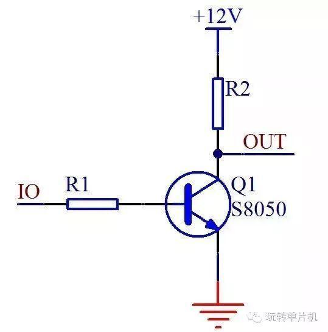
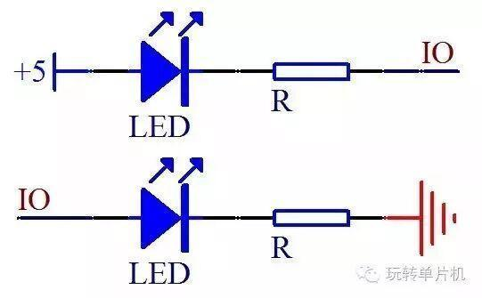
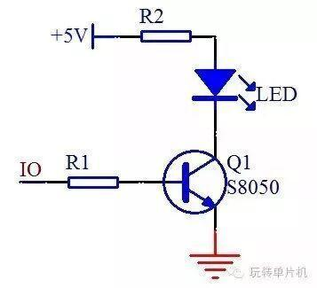
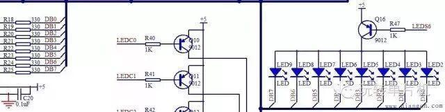

论三极管的作用
论三极管的应用

什么是三极管？
三极管，全称应为半导体三极管，也称双极型晶体管、晶体三极管，是一种控制电流的半导体器件。其作用是把微弱信号放大成幅度值较大的电信号，也用作无触点开关。
了解了什么是三极管之后
让我们来看一下三极管的应用
 | 我们可以通过单片机控制三极管的基极来间接控制后边的小灯的亮灭。还有一个控制就是进行不同电压之间的转换控制，比如我们的单片机的IO口是5V系统，如果直接接12V系统会烧坏单片机，所以我们加一个三极管，三极管的工作电压高于单片机的IO口电压，用5V的IO口来控制12V的电路，如图1所示。 |

图1 三极管电路图
 | 图1里所示，当IO口输出高电平5V时，三极管导通，OUT输出低电平0V，当IO口输出低电平时，三极管截止，OUT则由于上拉电阻R2的作用而输出12V的高电平，这样就实现了低电压控制高电压的工作原理。所谓的驱动，主要是指电流输出能力。我们再来看这两个图之间的对比 |

图2 LED小灯对比示意图
 | 单片机主要是个控制器件，具备四两拨千斤的特点。就如同杠杆必须有一个支点一样，想要撑起整个地球必须有力量承受的支点。单片机的IO口可以输出一个高电平，但是他的输出电流很有限，普通IO口输出高电平的时候，大概只有几十到几百uA的电流，达不到1mA，也就点不亮这个LED小灯或者亮度很低，这个时候如果我们想高电平点亮LED，用上三极管就可以这样来处理，我们板上的这种型号，可以通过500mA的电流，有的三极管通过的电流还更大一些，如图3所示。 |

图3 三极管驱动LED小灯
 | 图3中，当IO口是高电平，三极管导通，因为三极管的电流放大作用，c极电流就可以达到mA以上了，就可以成功点亮LED小灯。虽然我们用了IO口的低电平可以直接点亮LED，但是单片机的IO口作为低电平，输入电流就可以很大吗？这个我想大家都能猜出来，当然不可以。单片机的IO口电流承受能力，不同型号不完全一样，就STC89C52来说，官方手册的81页有对电气特性的介绍，整个单片机的工作电流，不要超过50mA，单个IO口总电流不要超过6mA。即使一些增强型51的IO口承受电流大一点，可以到25mA，但是还要受到总电流50mA的限制。那我们来看电路图的8个LED小灯的这个部分电路，如图4所示。 |

图四 LED电路图
 | 4图示这里我们要学会看电路图的一个知识点，大家注意看，电路图右侧所有的LED下侧的线最终都连到一根黑色的粗线上去了，大家注意，这个地方不是实际的完全连到一起，而是一种总线的画法，画了这种线以后，表示这是个总线结构，所有的名字一样的是一一对应的连接到一起，其他名字不一样的，是不连到一起的。比如左侧的DB0和右侧的最左边的LED2小灯下边的DB0是连在一起的，而和DB1等其他线不是连在一起的。 |
编辑：杜遇涵
文字：网 络
图片：网 络
-END-